രൂപ
1
രൂപ
ൾ വര ാം
ൾ വര ാം
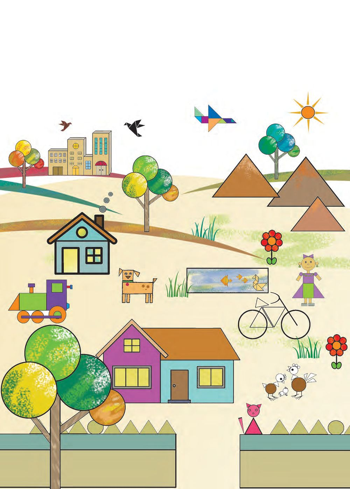
രൂപ
1
രൂപ
ൾ വര ാം
ൾ വര ാം

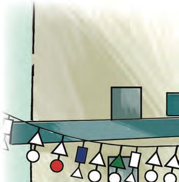
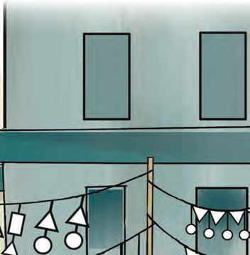
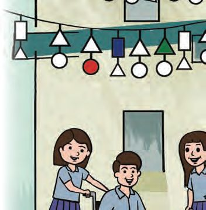
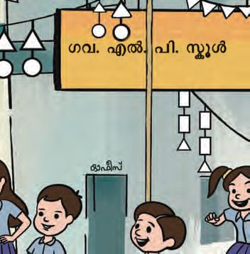
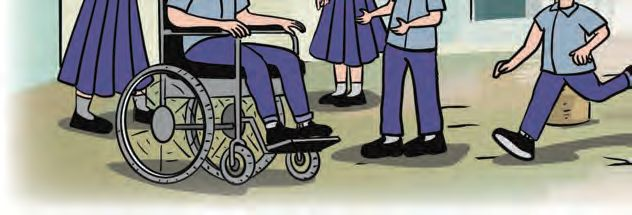
ഗണിതം
ാൻേഡർഡ് - III
േവശേനാ
വം
അനുവും സുബിയും മൂ ാം ാസിലാണ് പഠി ു ത്. േവശേനാ വ ിന് അവരുെട ൂൾ അല രി ിരി ു ു.
േതാരണ
ിന് നിറം െകാടു
് ചി ം ഭംഗിയാ
േതാരണ
ിെല ഓേരാ രൂപവും എ
വീതെമ ് എഴുതൂ...
രൂപം എ
ൂ...
ം 8

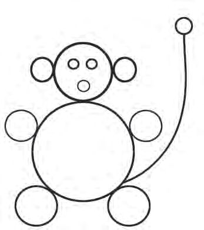
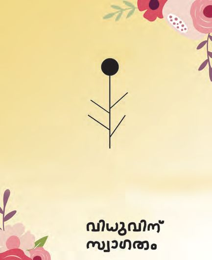
രൂപ
ൾ വര ാം
ആശംസാകാർഡ് ഈ വർഷം പുതിയതായി വ വിധുവിന് ആശംസാകാർഡ് െകാടു ണം. സുബിയും കൂ ുകാരും െപാ ുകൾ ഒ ി ും ചി വര ും കാർഡ് ത ാറാ ുകയാണ്. നി ളും സഹായി ൂ...
ൾ
• ചി ിെല െപാ ിേനാട് േചർ ് ചു ും അേത വലു ിലു എ െപാ ുകൾ ഒ ി ാൻ കഴിയും ?
• ഞാൻ ഊഹി ത്.
• െപാ ുകൾ ഒ ി േ ാൾ കി ിയ എ
നി
ൾ
ം.
ും വര ാേമാ ?
വ ൾ ഉപേയാഗി ുളള ഒരുചി ം േനാ ൂ. നിറം െകാടു ൂ...
ഇതുേപാെല വ ൾ ഉപേയാഗി ് മെ ാരു ചി ം വര ൂ...
എ െനയാണ് വ ം വര ത് ? മേ െതാെ രീതിയിൽ വ ം വര ാം ? 9

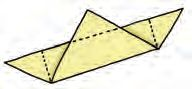
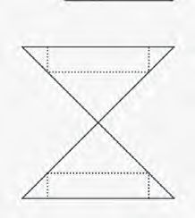
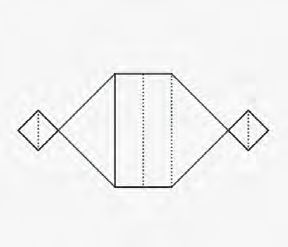
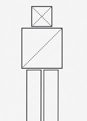
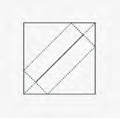
ഗണിതം
ാൻേഡർഡ് - III
േതാണിയിെലെ ാെ
? വിധുവിന് ആശംസാകാർഡ് ഇ െ േതാണി അവർ ് െകാടു ു.
ു. അവൻ തെ
ൈകയിലു
േതാണി നിവർ ിയത് േനാ ൂ. അതിൽ എെ ാം രൂപ ൾ ഉ ് ? രൂപ ളുെട എ ം എഴുതി പ ിക പൂർ ിയാ ുക.
രൂപം
േപര്
എ
ം
ചതുരം ിേകാണം
• കടലാസ് നിവർ ി മട ുകളിലൂെട മുറി ് കി ിയ രൂപ ൾ അനു േനാ ുബു ിൽ ഒ ി ത് േനാ ൂ... ഇതുേപാെല പല രീതിയിൽ ഒ ി ് േവെറ ചി ൾ ഉ ാ ൂ...
രൂപ
ൾഉ
ാ
ാം
ഇതുേപാെല ഒരു ചതുരം ര ായി മുറിെ ടു ് വശ ൾ പല വിധ ിൽ േചർ ുവ ് േനാ ൂ... എെ ാം രൂപ ൾ ഉ ാ ാം ? ഇനി നാലായി മുറിെ ടു 10
് െച ുേനാ
ൂ...

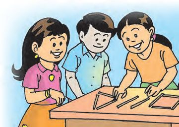
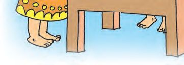
രൂപ
രൂപ
ൾഉ
ാ
ൾ വര ാം
ാം അനുവും കൂ ുകാരും ഈർ ിൽ ക ൾ വ ് ചതുരം, ിേകാണം എ ിവ ഉ ാ ുകയാണ്.
• ഒേര നീളമു 24 ഈർ ിൽ ക ൾ ഉപേയാഗി ് ചതുര ിേകാണ ളുമു ാ ൂ... എ ം പ ികയിൽ എഴുതൂ... എ
രൂപം
ം
ിേകാണം ചതുരം
• ചതുരം,
ിേകാണം ഇവിെട വര ് േചർ ചതുരം
ിേകാണം
ഒരു ചതുരമു ാ ാൻ എ ക ൾ ഉപേയാഗി ു ? ഒരു
ിേകാണമു
ാ
ുക.
ഈർ
ിൽ
ാേനാ ? 11
ളും

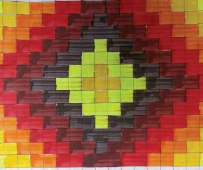
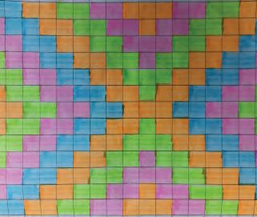
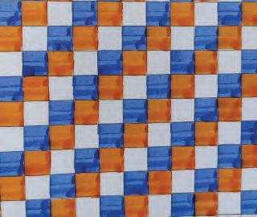
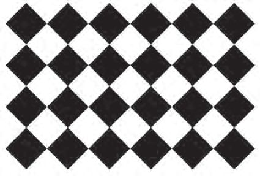
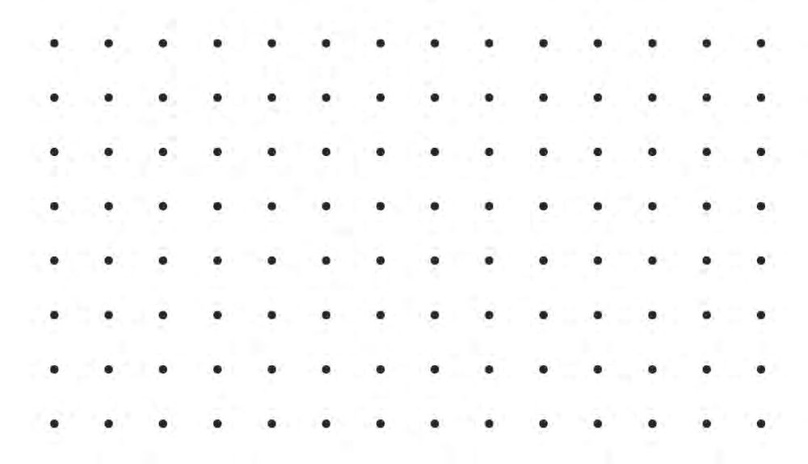
ഗണിതം
ാൻേഡർഡ് - III
ൈടലിെല ചി
ൾ
വിദ ാലയ ിന് ാമ ായ ് നിർ ി ് നൽകിയ സ്മാർ ് ാസ്മുറിയുെട തറയിൽ ൈടൽ പതി ി ു ്. ന ായി ിേ ?
കു ികൾ വര ് നിറം നൽകിയ ൈടൽ ഡിൈസനുകൾ േനാ
അനു വര ത്
സുബി വര ത്
ൂ...
വിധു വര ത്
ചുവെട ത ി ു കു ുകൾ േയാജി ി ് ഒരു ൈടൽ ഡിൈസൻ ത ാറാ ി നിറം െകാടു ൂ... കു ുകൾ എ െനെയ ാം േചർ ുവര ാെമ ് ആേലാചി േണ...
12

രൂപ
കു
ുകളി വരയിലൂെട മുറി ാൽ കി ു
എ
താെഴ ത ി ു രൂപ ആ ുക. വര ു േനാ
എ
കഴിയാ വ ടിക് () െച ുക
അടു
സി
െള ഒരു വര വര ് ര
ു
ിേകാണം
ൂ... കഴിയാ
വ ഏെത ാം ?
സി
ഡി
എ
താര് ? വര ുേചർ
ഇതുേപാെലയു
രൂപം എ ാണ് ?
ബി
ബി
ബി
സി
ഡി
ൂ...
േവെറ പാേ ണുകൾ വര ാേമാ ?
13
ൾ വര ാം
ഇ
ഇ

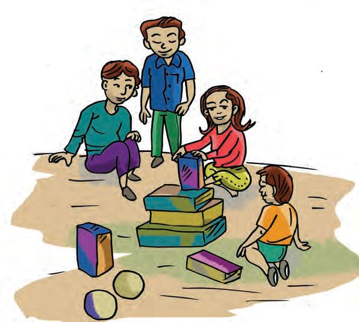
ഗണിതം
ാൻേഡർഡ് - III
ചു ുപാടും കാണു
രൂപ
ൾ
നി ളുെട ൂളിലും പരിസര വ ു െള പ ികെ ടു ുക.
ുമു
ചി ിൽ നി ൾ ് പരിചയമു ഏെത ാം രൂപ ളു ് ?
ചതുരം
മര
രൂപ
താെഴ പറയു ിേകാണം
ൾ
അനുവും കൂ ുകാരും മര ഉപേയാഗി ് രൂപ ൾ ഉ കളി ുകയാണ്.
കൾ ാ ി
നി ളും ഇ െന കളി ുക. ആരാണ് എ വും ഉയര ിൽ അടു ിയത് ?
14
ആrതിയിലു
വ ം

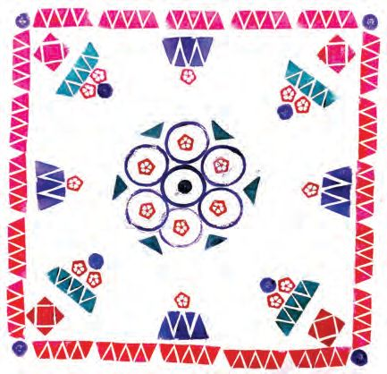
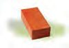

രൂപ
• ചതുര യുെടയും േഗാള േപര് എഴുതൂ. ചതുര
കൾ
െവജി ബിൾ
േഗാള
ിെ യും ആrതിയിലു ൾ
r ിപരിചയേമളയിെല െവജി ബിൾ ി ിങ് മ ര ിൽ വിധു ത ാറാ ിയ േമശവിരിയാണിത്. െവ , കാര ്, ഉരുള ിഴ ്, സവാള എ ീ പ റികളാണ് ഉപേയാഗി ത്. നി ളും െവജി ബിൾ ി ുകൾ ത ാറാ ൂ...
ൽ
1. ഏഴാം േപജിെല ചി
കൂടുതൽ ഇ െ ചി
വർ
ന
ൾ
ൾ േനാ ൂ. നി ചി ം ഏതാണ് ?
ിൽ ഏെത ാം രൂപ
വ ു
ളുെട
ഇ ിക ഒരു ചതുര യാണ്. പ ് ഒരു േഗാളമാണ്.
ി ിങ്
വിലയിരു
ൾ വര ാം
ൾഉ
ൾ
്?
അതുേപാെലാ ് മണൽ ത ിൽ (sand tray) ഉ ാ ൂ... 15
്

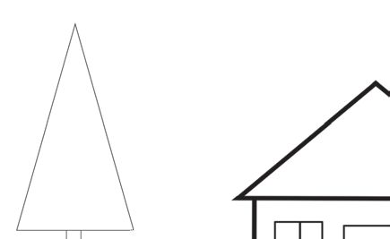
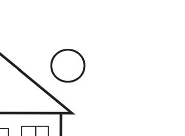
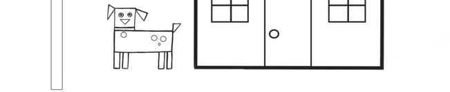
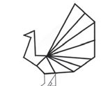
ഗണിതം
2. രൂപ
ാൻേഡർഡ് - III
ൾ േചർ
ുവര ാം.
ിേകാണം, ചതുരം, വ ം എ ിവ ഉപേയാഗി ് ഇ മുളള ഒരു രൂപം വര ുക.
3. ചി
ിന് നിറം െകാടു
് ഭംഗിയാ
16
ൂ...